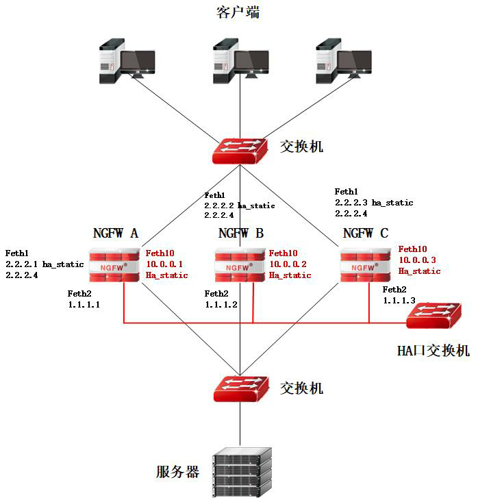

l用户网络
集群模式部署时，由两台或多台设备组成，其中一台设备处干active状态，其他设备属于standby状态。集群功能启用时，处于active状态的设备接收到达集群系统的所有流量，将接收到的流量根据负裁均衡算法分发到其他健康状态正常的standby设备，当active状态设备出现导常时，集群系统将会自动选举出新的active设备接替原active设备的工作，达到不间断业务的目的。
主设备：集群中的分流机，监控组状态为ACTIVE。处理部分业务流量，以及根据分流策略分流流量到从设备。
从设备：除主设备之外的设备，监控组状态为STANDBY。承担主设备分发的业务流量处理工作。

l基本需求
三台防火墙均正常工作时，A为主墙，B和C为从墙，客户端访问防火墙业务（2.2.2.4），主墙A创建session，通过心跳口将session同步到备墙(B、C)。然后主墙A通过修改报文的目的mac的方式，将报文发送到指定备墙（B墙或C墙），实现负载均衡，相关业务报文从各设备（A、B、C）feth1（ha static ip）转发给客户端。
l配置要点
ü配置接口
Ø配置心跳口属性。
ü配置防火墙高可用性集群模式模式
ü配置高可用性管理组
ü启动高可用性
l配置步骤